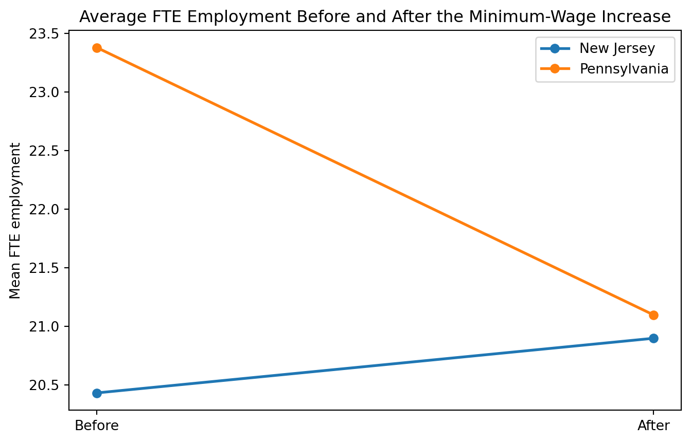

import pandas as pd
import numpy as np
import matplotlib.pyplot as plt
import statsmodels.api as sm
cols = [
('SHEET',1,3),('CHAIN',5,5),('CO_OWNED',7,7),('STATE',9,9),
('SOUTHJ',11,11),('CENTRALJ',13,13),('NORTHJ',15,15),('PA1',17,17),('PA2',19,19),('SHORE',21,21),
('NCALLS',23,24),('EMPFT',26,30),('EMPPT',32,36),('NMGRS',38,42),('WAGE_ST',44,48),
('INCTIME',50,54),('FIRSTINC',56,60),('BONUS',62,62),('PCTAFF',64,68),('MEALS',70,70),
('OPEN',72,76),('HRSOPEN',78,82),('PSODA',84,88),('PFRY',90,94),('PENTREE',96,100),
('NREGS',102,103),('NREGS11',105,106),('TYPE2',108,108),('STATUS2',110,110),('DATE2',112,117),
('NCALLS2',119,120),('EMPFT2',122,126),('EMPPT2',128,132),('NMGRS2',134,138),('WAGE_ST2',140,144),
('INCTIME2',146,150),('FIRSTIN2',152,156),('SPECIAL2',158,158),('MEALS2',160,160),
('OPEN2R',162,166),('HRSOPEN2',168,172),('PSODA2',174,178),('PFRY2',180,184),('PENTREE2',186,190),
('NREGS2',192,193),('NREGS112',195,196)
]
colspecs = [(s - 1, e) for _, s, e in cols]
names = [n for n, _, _ in cols]
df = pd.read_fwf("../../njmin/public.dat", colspecs=colspecs, names=names, dtype=str)
for c in names:
df[c] = pd.to_numeric(df[c].str.strip(), errors="coerce")
for suf in ["", "2"]:
empft = f"EMPFT{suf}" if suf else "EMPFT"
emppt = f"EMPPT{suf}" if suf else "EMPPT"
nmgrs = f"NMGRS{suf}" if suf else "NMGRS"
df[f"FTE{suf}"] = df[empft] + df[nmgrs] + 0.5 * df[emppt]
df["FTE2_table2"] = df["FTE2"]
df.loc[df["STATUS2"] == 3, "FTE2_table2"] = 0
df["MEAL1"] = df["PSODA"] + df["PFRY"] + df["PENTREE"]
df["MEAL2"] = df["PSODA2"] + df["PFRY2"] + df["PENTREE2"]
df["state_name"] = np.where(df["STATE"] == 1, "NJ", "PA")
conditions = [
(df["STATE"] == 1) & (df["WAGE_ST"] == 4.25),
(df["STATE"] == 1) & (df["WAGE_ST"] > 4.25) & (df["WAGE_ST"] < 5.00),
(df["STATE"] == 1) & (df["WAGE_ST"] >= 5.00)
]
choices = ["NJ: $4.25", "NJ: $4.26-$4.99", "NJ: $5.00+"]
df["wage_group"] = np.select(conditions, choices, default=np.where(df["STATE"] == 0, "PA", np.nan))
df["gap"] = np.where(df["STATE"] == 0, 0,
np.where(df["WAGE_ST"] >= 5.05, 0,
np.where(df["WAGE_ST"] > 0, (5.05 - df["WAGE_ST"]) / df["WAGE_ST"], np.nan)))Replication of Card and Krueger (1994)
Minimum Wages and Employment: A Case Study of the Fast-Food Industry in New Jersey and Pennsylvania
Introduction
Card and Krueger (1994) study whether an increase in the minimum wage reduces employment. Their setting is the April 1, 1992 increase in New Jersey’s minimum wage from $4.25 to $5.05. To evaluate the policy, the authors survey fast-food restaurants in New Jersey and in eastern Pennsylvania, where the minimum wage did not change over the same period. The central research question is straightforward: did employment fall in New Jersey relative to Pennsylvania after the policy change?
This question matters because the standard competitive model predicts that a binding minimum wage should reduce employment. Card and Krueger revisit that prediction using establishment-level data from fast-food restaurants rather than aggregate teenage employment data. Their paper became highly influential because it combines a simple research design with a surprising empirical result: they find no indication that the New Jersey minimum-wage increase reduced employment in the fast-food sector.
The paper’s empirical strategy is a difference-in-differences design. Rather than comparing New Jersey before and after the increase in isolation, the authors compare the change in New Jersey to the simultaneous change in Pennsylvania. This matters because employment could have changed over time for many other reasons, including recession conditions in the region. Using Pennsylvania as a control group helps net out those common time effects.
In this post, I follow the structure of the assignment closely. First, I explain the paper’s research question and empirical design. Second, I replicate the paper’s key statistical finding: the relative increase in employment in New Jersey versus Pennsylvania after the minimum-wage change. Third, I do one additional thing by graphing the core difference-in-differences result and explaining why the design can support a causal interpretation.
Data and Research Design
The Card and Krueger data come from two survey waves of fast-food restaurants in New Jersey and eastern Pennsylvania. The first wave was conducted in February-March 1992, shortly before the New Jersey minimum-wage increase, and the second wave was conducted in November-December 1992, several months afterward. The sample includes Burger King, KFC, Roy Rogers, and Wendy’s restaurants.
The key outcome in the paper is full-time-equivalent employment, or FTE. Following the paper, I define FTE employment as:
- number of managers
- plus number of full-time workers
- plus 0.5 times the number of part-time workers
This is the employment measure used in the paper’s main tables.
The basic treatment-control setup is:
- Treatment group: New Jersey stores
- Control group: Pennsylvania stores
- Before period: wave 1
- After period: wave 2
The core difference-in-differences comparison is:
(NJ after - NJ before) - (PA after - PA before)
If New Jersey employment rises relative to Pennsylvania after the policy, the DID estimate is positive. If the minimum wage reduced employment in New Jersey relative to Pennsylvania, the DID estimate would be negative.
Main Analysis
Load and process the data
Replicating selected values from Table 2
Before turning to the main DID result, it is useful to check that the underlying data look like the published paper. I reproduce a few selected values from Table 2: average FTE employment, average starting wage, and the average price of a full meal in each state before and after the policy.
table2 = pd.DataFrame({
"Variable": [
"Wave 1 FTE employment",
"Wave 1 starting wage",
"Wave 1 full meal price",
"Wave 2 FTE employment",
"Wave 2 starting wage",
"Wave 2 full meal price"
],
"NJ": [
df.loc[df.STATE == 1, "FTE"].mean(),
df.loc[df.STATE == 1, "WAGE_ST"].mean(),
df.loc[df.STATE == 1, "MEAL1"].mean(),
df.loc[df.STATE == 1, "FTE2_table2"].mean(),
df.loc[df.STATE == 1, "WAGE_ST2"].mean(),
df.loc[df.STATE == 1, "MEAL2"].mean()
],
"PA": [
df.loc[df.STATE == 0, "FTE"].mean(),
df.loc[df.STATE == 0, "WAGE_ST"].mean(),
df.loc[df.STATE == 0, "MEAL1"].mean(),
df.loc[df.STATE == 0, "FTE2_table2"].mean(),
df.loc[df.STATE == 0, "WAGE_ST2"].mean(),
df.loc[df.STATE == 0, "MEAL2"].mean()
]
})
table2["NJ"] = table2["NJ"].round(2)
table2["PA"] = table2["PA"].round(2)
table2| Variable | NJ | PA | |
|---|---|---|---|
| 0 | Wave 1 FTE employment | 20.44 | 23.33 |
| 1 | Wave 1 starting wage | 4.61 | 4.63 |
| 2 | Wave 1 full meal price | 3.35 | 3.04 |
| 3 | Wave 2 FTE employment | 21.03 | 21.17 |
| 4 | Wave 2 starting wage | 5.08 | 4.62 |
| 5 | Wave 2 full meal price | 3.41 | 3.03 |
These descriptive statistics closely match the paper. Most importantly, the starting wage rises sharply in New Jersey between wave 1 and wave 2, while Pennsylvania remains much lower. This confirms that the treatment was real and economically meaningful.
Replicating the Key Statistical Finding
The assignment asks for a replication of a key statistical finding. For this paper, the key result is the positive difference-in-differences estimate in Table 3 and its regression counterpart in Table 4, column (i). This is the central empirical finding behind the paper’s headline conclusion.
Replicating Table 3
Table 3 reports average FTE employment before and after the policy and then compares the changes across states and across wage groups. I replicate the paper’s main 3 by 3 block: rows 3 to 5 and columns (iii), (vii), and (viii).
row3 = {}
row3["NJ_minus_PA"] = df.loc[df.STATE == 1, "FTE2_table2"].mean() - df.loc[df.STATE == 1, "FTE"].mean() \
- (df.loc[df.STATE == 0, "FTE2_table2"].mean() - df.loc[df.STATE == 0, "FTE"].mean())
means_before = df.groupby("wage_group")["FTE"].mean()
means_after = df.groupby("wage_group")["FTE2_table2"].mean()
row3["Low_minus_High"] = (means_after["NJ: $4.25"] - means_before["NJ: $4.25"]) - (means_after["NJ: $5.00+"] - means_before["NJ: $5.00+"])
row3["Mid_minus_High"] = (means_after["NJ: $4.26-$4.99"] - means_before["NJ: $4.26-$4.99"]) - (means_after["NJ: $5.00+"] - means_before["NJ: $5.00+"])
bal = df[df[["FTE", "FTE2"]].notna().all(axis=1)].copy()
row4 = {}
row4["NJ_minus_PA"] = (bal.loc[bal.STATE == 1, "FTE2"] - bal.loc[bal.STATE == 1, "FTE"]).mean() \
- (bal.loc[bal.STATE == 0, "FTE2"] - bal.loc[bal.STATE == 0, "FTE"]).mean()
bal_means_before = bal.groupby("wage_group")["FTE"].mean()
bal_means_after = bal.groupby("wage_group")["FTE2"].mean()
row4["Low_minus_High"] = (bal_means_after["NJ: $4.25"] - bal_means_before["NJ: $4.25"]) - (bal_means_after["NJ: $5.00+"] - bal_means_before["NJ: $5.00+"])
row4["Mid_minus_High"] = (bal_means_after["NJ: $4.26-$4.99"] - bal_means_before["NJ: $4.26-$4.99"]) - (bal_means_after["NJ: $5.00+"] - bal_means_before["NJ: $5.00+"])
r5 = df[df["FTE"].notna() & (df["FTE2"].notna() | df["STATUS2"].isin([2, 4, 5]))].copy()
r5["FTE2_r5"] = r5["FTE2"]
r5.loc[r5["STATUS2"].isin([2, 4, 5]), "FTE2_r5"] = 0
row5 = {}
row5["NJ_minus_PA"] = (r5.loc[r5.STATE == 1, "FTE2_r5"] - r5.loc[r5.STATE == 1, "FTE"]).mean() \
- (r5.loc[r5.STATE == 0, "FTE2_r5"] - r5.loc[r5.STATE == 0, "FTE"]).mean()
r5_before = r5.groupby("wage_group")["FTE"].mean()
r5_after = r5.groupby("wage_group")["FTE2_r5"].mean()
row5["Low_minus_High"] = (r5_after["NJ: $4.25"] - r5_before["NJ: $4.25"]) - (r5_after["NJ: $5.00+"] - r5_before["NJ: $5.00+"])
row5["Mid_minus_High"] = (r5_after["NJ: $4.26-$4.99"] - r5_before["NJ: $4.26-$4.99"]) - (r5_after["NJ: $5.00+"] - r5_before["NJ: $5.00+"])
table3_rep = pd.DataFrame([
{"Comparison": "Row 3: all available observations", **row3},
{"Comparison": "Row 4: balanced sample", **row4},
{"Comparison": "Row 5: balanced sample, temporary closures = 0", **row5}
])
table3_rep[["NJ_minus_PA", "Low_minus_High", "Mid_minus_High"]] = table3_rep[["NJ_minus_PA", "Low_minus_High", "Mid_minus_High"]].round(2)
table3_rep| Comparison | NJ_minus_PA | Low_minus_High | Mid_minus_High | |
|---|---|---|---|---|
| 0 | Row 3: all available observations | 2.75 | 3.36 | 2.91 |
| 1 | Row 4: balanced sample | 2.75 | 3.36 | 2.87 |
| 2 | Row 5: balanced sample, temporary closures = 0 | 2.51 | 3.29 | 2.88 |
The most important entry is the balanced-sample estimate in row 4, New Jersey minus Pennsylvania. My replication is about 2.75, which is essentially identical to the published result. That is the paper’s central statistical finding: employment did not fall in New Jersey relative to Pennsylvania after the minimum-wage increase.
Replicating Table 4, column (i)
The paper also presents the same basic result in a regression framework. In Table 4, column (i), the dependent variable is the change in FTE employment, and the key regressor is a New Jersey dummy. This regression is a compact way to summarize the reduced-form DID comparison.
reg = df.copy()
reg["DEMP"] = reg["FTE2"] - reg["FTE"]
reg["DWAGE"] = reg["WAGE_ST2"] - reg["WAGE_ST"]
reg["CLOSED"] = (reg["STATUS2"] == 3).astype(int)
reg = reg[reg["DEMP"].notna()].copy()
reg = reg[(reg["CLOSED"] == 1) | ((reg["CLOSED"] == 0) & reg["DWAGE"].notna())].copy()
X = sm.add_constant(reg["STATE"])
model = sm.OLS(reg["DEMP"], X).fit()
reg_result = pd.DataFrame({
"Coefficient": ["Intercept", "New Jersey dummy"],
"Estimate": model.params.values,
"Std. Error": model.bse.values,
"t-stat": model.tvalues.values,
"p-value": model.pvalues.values
})
reg_result.round(3)| Coefficient | Estimate | Std. Error | t-stat | p-value | |
|---|---|---|---|---|---|
| 0 | Intercept | -2.127 | 1.074 | -1.980 | 0.048 |
| 1 | New Jersey dummy | 2.326 | 1.192 | 1.952 | 0.052 |
My estimate for the New Jersey dummy is very close to the published coefficient in Table 4, column (i). That close match gives confidence that the data processing and sample construction are correct.
One Additional Thing
For the assignment’s third requirement, I do two closely related additional things. First, I graph the main difference-in-differences result, which the paper presents only in tabular form. Second, I explain why the DID strategy can support a causal conclusion.
Visualizing the main DID result
plot_df = pd.DataFrame({
"State": ["Pennsylvania", "Pennsylvania", "New Jersey", "New Jersey"],
"Period": ["Before", "After", "Before", "After"],
"Mean FTE": [
bal.loc[bal.STATE == 0, "FTE"].mean(),
bal.loc[bal.STATE == 0, "FTE2"].mean(),
bal.loc[bal.STATE == 1, "FTE"].mean(),
bal.loc[bal.STATE == 1, "FTE2"].mean()
]
})
plot_df| State | Period | Mean FTE | |
|---|---|---|---|
| 0 | Pennsylvania | Before | 23.380000 |
| 1 | Pennsylvania | After | 21.096667 |
| 2 | New Jersey | Before | 20.430583 |
| 3 | New Jersey | After | 20.897249 |

The graph makes the logic of the paper much easier to see. Pennsylvania starts higher and declines. New Jersey starts lower and rises slightly. The difference between those two changes is the DID estimate.
Why DID supports a causal interpretation
A simple before-and-after comparison in New Jersey would not be enough, because employment could have changed over time for many other reasons, including the broader regional economy. The DID design improves on that by subtracting off the contemporaneous change in Pennsylvania.
The identifying assumption is that, absent the policy, employment in New Jersey and Pennsylvania would have moved in parallel. If that assumption is reasonable, then the difference between the two state-specific changes can be interpreted as the effect of the policy rather than as a general time trend.
This is what makes the Card and Krueger design so influential. It turns a policy change in one state into a quasi-experimental comparison with a nearby control group. Even though this is not a randomized experiment, the design is much more credible than a simple cross-section or a simple before-after comparison.
Conclusion
This replication closely matches the main findings of Card and Krueger (1994). The descriptive statistics from Table 2 line up with the published means, especially for wages and employment. More importantly, I recover the paper’s core positive difference-in-differences estimate in Table 3 and a very similar regression coefficient in Table 4, column (i).
These results are consistent with the paper’s main conclusion: the 1992 New Jersey minimum-wage increase did not reduce employment in the fast-food industry relative to Pennsylvania. The additional graph and discussion of the DID logic also help clarify why the paper’s empirical strategy remains so influential in applied economics.